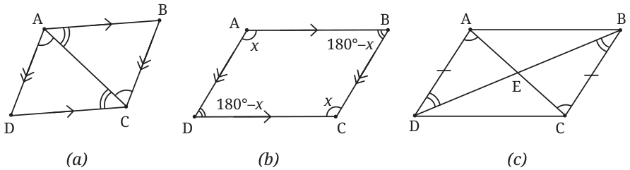
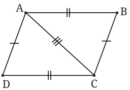
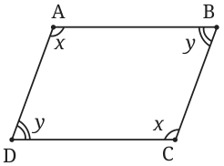
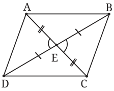
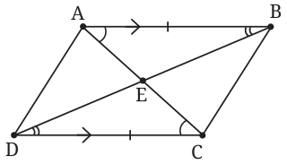

As we studied in Grade 8, parallelograms are quadrilaterals whose opposite sides are parallel. They include rhombuses, rectangles and squares and form a very important and widely used class of quadrilaterals.
To test if a given quadrilateral is a parallelogram, do we have to check that the opposite sides are parallel? Are there other ways to test this? To answer this, recall the following properties of a parallelogram that we proved last year.
Theorem 1:
- (a)The opposite sides of a parallelogram are equal.
- (b)The opposite angles of a parallelogram are equal.
- (c)The diagonals of a parallelogram bisect each other.
It is usually interesting to examine if converses of known theorems are true. If the converse of any of the three properties is true, it can be used as an alternate way to show that a quadrilateral is a parallelogram. To explore this, let us write the converses. For this, we first write (a), (b) and (c) in “If … then …” form.
- (a)
If a quadrilateral is a parallelogram, then its opposite sides are equal.
Converse: If the opposite sides of a quadrilateral are equal, then it is a parallelogram.
Is this converse statement true?
- (b)
If a quadrilateral is a parallelogram, then the opposite angles are equal.
Converse: If the opposite angles of a quadrilateral are equal, then it is a parallelogram.
Is this converse statement true?
- (c)
If a quadrilateral is a parallelogram, then its diagonals bisect each other.
Converse: If the diagonals of a quadrilateral bisect each other, then it is a parallelogram.
Is this converse statement true?
Can you experiment and guess what the answers are?
It turns out that all three converse statements are true. To demonstrate this, it is useful to recall how we had proved Theorem 1:
Proof of Theorem 1:

Proof of (a): In the parallelogram ABCD, AC is a transversal for \(AB \parallel DC\) and also for \(AD \parallel BC\). So we get \(\triangle ACD \cong \triangle CAB\) by the ASA test. Therefore, \(AB = DC\) and \(AD = BC\).
Proof of (b): \(BC \parallel AD\) with AB a transversal. Therefore \(\angle A + \angle B = 180^\circ\) as they are interior angles on the same side of this transversal. By similar reasoning, any two adjacent angles add up to \(180^\circ\). By using algebra, \(\angle A = \angle C\) and \(\angle B = \angle D\).
Proof of (c): Call the intersection point of the two diagonals E. Using property (a), \(\triangle AED \cong \triangle CEB\), by ASA or AAS. So \(EA = EC\) and \(EB = ED\), which means that E is the midpoint of both diagonals.
We will now deduce the converse statements. To prove the converse of a known theorem, we can try to run the original proof backwards. This strategy may or may not work. (For example, the reasoning “If \(x = y\), then \(x^2 = y^2\)” cannot be reversed, because \(x\) and \(y\) may have opposite signs, e.g., we could have \(x = 3\) and \(y = -3\).) When the strategy does work, we should be careful to give proper justification for each step in the backward direction.
Theorem 2 (converse of (a)): If the opposite sides of a quadrilateral are of equal length, then it is a parallelogram.

Proof: Let ABCD be this quadrilateral. \(\triangle ACD \cong \triangle CAB\) by SSS, so corresponding angles are equal. Using transversal AC, we get \(AB \parallel DC\) and \(AD \parallel BC\).
Pay close attention to how the above proof retraces the proof of (a) backwards. Both proofs go via the same congruence \(\triangle ACD \cong \triangle CAB\), but the two proofs use different tests to justify the congruence (ASA vs SSS) and draw different conclusions. Try to use the same ‘backward retracing’ strategy for the remaining converses.
Theorem 3 (converse of (b)): If the opposite angles of a quadrilateral are equal, then it is a parallelogram.
Proof: Let ABCD be this quadrilateral. Because \(\angle A = \angle C\) and \(\angle B = \angle D\), we have
\(360^\circ = \angle A + \angle B + \angle C + \angle D = 2(\angle A + \angle B) = 2(\angle B + \angle C).\)

Therefore \(\angle A + \angle B = \angle B + \angle C = 180^\circ\). As in the proof of (b), we use the fact that AB is a transversal for the pair BC and AD. By \(\angle A + \angle B = 180^\circ\) we deduce \(BC \parallel AD\). Similarly, we get \(AB \parallel DC\) by using \(\angle B + \angle C = 180^\circ\).
Theorem 4 (converse of (c)): A quadrilateral whose diagonals bisect each other is a parallelogram.
Proof: Let ABCD be this quadrilateral. Let E be the intersection point of the diagonals AC and BD. As \(EA = EC\) and \(EB = ED\), we have \(\triangle AED \cong \triangle CEB\) by SAS. Now using \(\angle DAE = \angle ECB\) along with transversal AC, we get \(AD \parallel BC\). Similarly, \(\triangle EAB \cong \triangle ECD\) gives \(AB \parallel DC\).

Finally, there is one more useful test to check if a given quadrilateral ABCD is a parallelogram.
Theorem 5 (equal parallel sides test): A quadrilateral with one pair of equal and parallel opposite sides is a parallelogram.

Proof: Suppose in a quadrilateral ABCD we have \(AB \parallel DC\) and \(AB = DC\). Let E be the intersection point of the diagonals AC and BD. (Why must the diagonals intersect? See Exercise Set 12.1, Q3.) We have \(\triangle EAB \cong \triangle ECD\) by ASA. So the diagonals bisect each other. By the converse of (c), ABCD is a parallelogram.